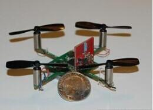
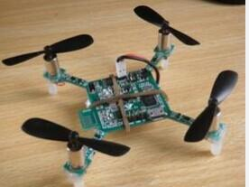
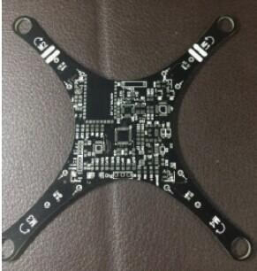
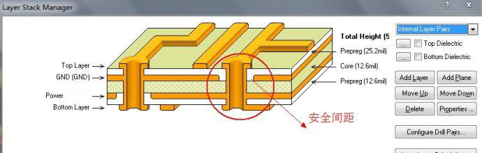
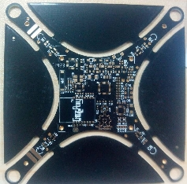

關於Crazepony的板形及結構
板形
目前，市面上的絕大部分的小四軸採用的是直“X”形和直“十”字的結構。但這兩種結構有一個缺點，就是機臂的問題。如果機臂做得太寬，毫無疑問會嚴重影響到整個小四軸的美觀性。但是如果不做寬，為了給螺旋槳讓出足夠的空間，機臂是要伸出小四軸主體一段相對比較長的距離的，這樣的話就會造成整個機臂細長，有碰撞或者受力稍大都可能造成機臂斷掉（在網上看到不少四軸愛好者就抱怨過這個問題）。


對以上的問題，Crazepony在選板形的過程中，淘汰了直“X”和直“十”字的結構。採用了全新的雙曲線結構（注意：機臂與機臂之間並不是半圓），從小四軸主體到機臂末端沿一條曲線變小，這樣既保證了機臂的牢固性，又保證了整體的美觀。採用雙曲線結構之後，整機的流暢性顯得淋漓盡致，給人一種柔和圓滑的感覺，與直“十”字的那種呆板簡直天差地別。

Crazepony的雙曲線結構同時，有別於傳統小四軸飛行器PCB板結構的一個地方在於，Crazepony在機臂末端做了一個和電機外徑同等大小的圓孔，將電機安裝在圓孔內，就相當於將電機栓在了小四軸這個整體上面。這樣的方式與市面上絕大多數的小四軸將電機安裝在PCB板外的方式相比有一個很明顯的好處，就是：避免了電機支架鬆動，導致電機晃動，從而引起在飛行過程中整體的晃動。
板厚——2.0mm
Crazepony前三版採用的都是1.6mm的板厚，在試飛過程中一直覺得有點顫顫巍巍膽戰心驚的感覺，但就是沒發現原因。直到有一次看到crazyflie的一張側面圖，才發現根本原因在板子的厚度。雖然在試飛的過程中未造成過板子破裂等不良現象，為了保險起見還是採用了2.0mm的四層板（注意：板厚也不是隨便可以改的，不同的板厚會對信號傳輸有影響，具體影響的程度只能去不停地試）。
選擇四層板的原因，也是由於對硬件不斷的優化選擇，減少了元器件的數量，所以在保證整體大小的情況下，元器件都焊接在了PCB板的頂層。由於信號線都放置在了頂層，所以具體的四層結構（從上往下）是：signal_1(Top)，GND(Inner_1)，POWER(Inner_2)，Signal_2(Bottom)，這種結構方式有效的避免了POWER層對TOP層的一些不必要的信號干擾。關於多層電路板設計的問題，大家可以參考PCB四層電路板教程。

PCB板工藝
Crazepony採用的是黑色PCB板加沉金工藝。選擇黑色PCB板的主要原因就是覺得好看！搭配上銀色的鉛錫焊盤之後又顯得有點違和，出於對整體的美觀及進一步的工藝要求，Crazepony在第四版的時候，將原來普通的銀色鉛錫焊盤改為了沉金工藝的金色焊盤。沉金工藝的好處在於以下幾點：
- 沉金的金黃色配上PCB板的黑色，有木有一種高大上的感覺！！！
- 在焊接時，沉金工藝相對於普通的鉛錫焊盤更容易焊接，不易造成焊接不良。
- 沉金晶體結構緻密，不易產生氧化。同時表面的平整度與待用壽命較好。
- 沉金板焊盤上只有鎳金，線路上的阻焊與銅層的結合更牢固。 想對沉金工藝進一步瞭解的朋友可以參考PCB沉金工藝介紹。

